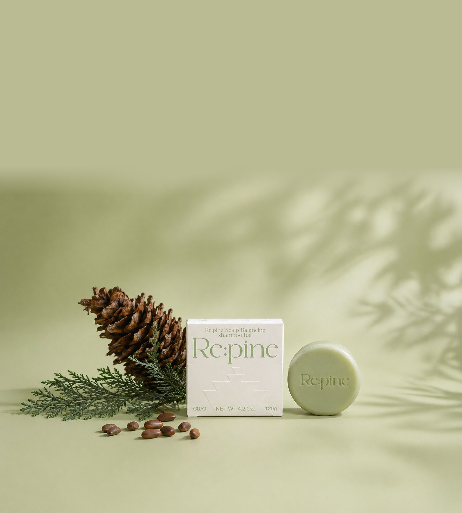
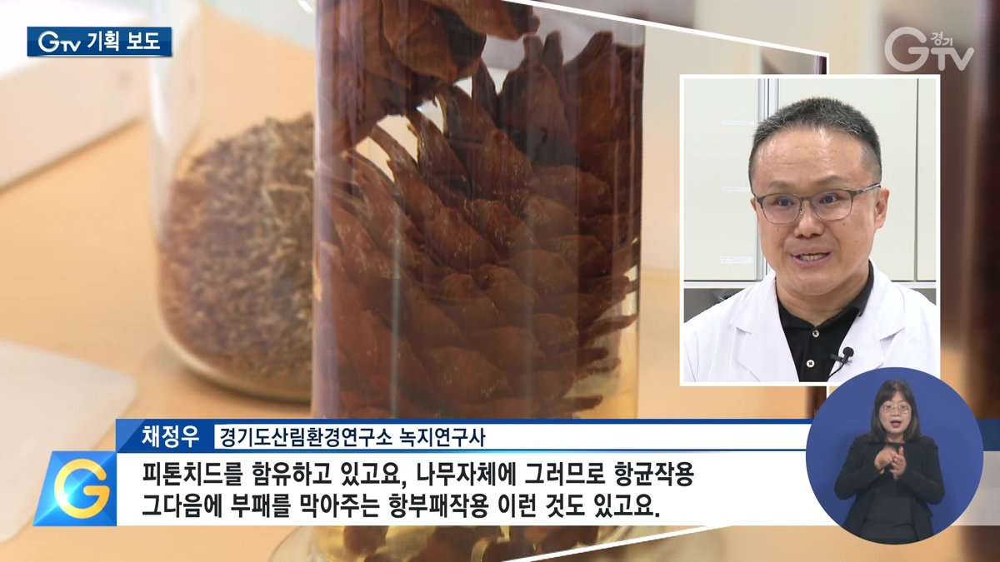
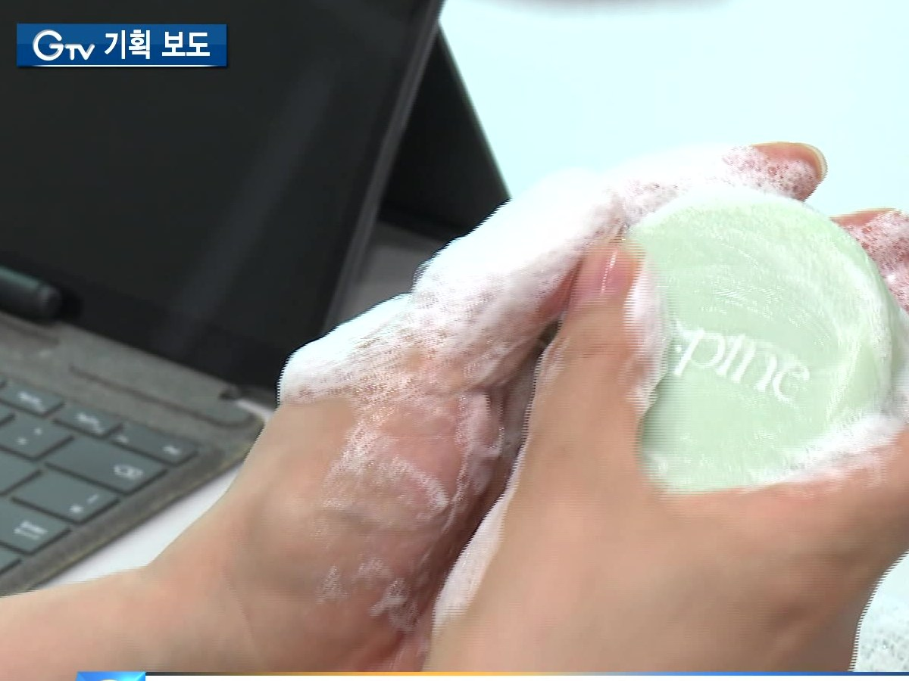
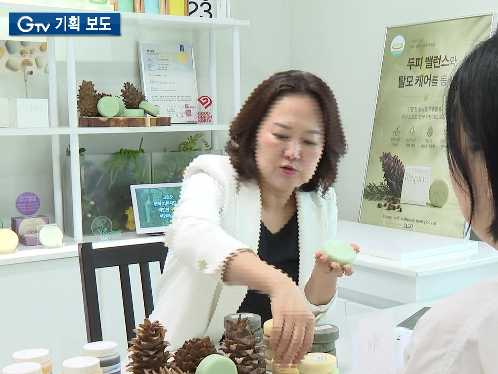
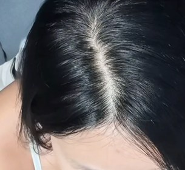
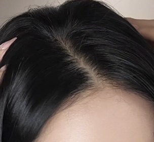
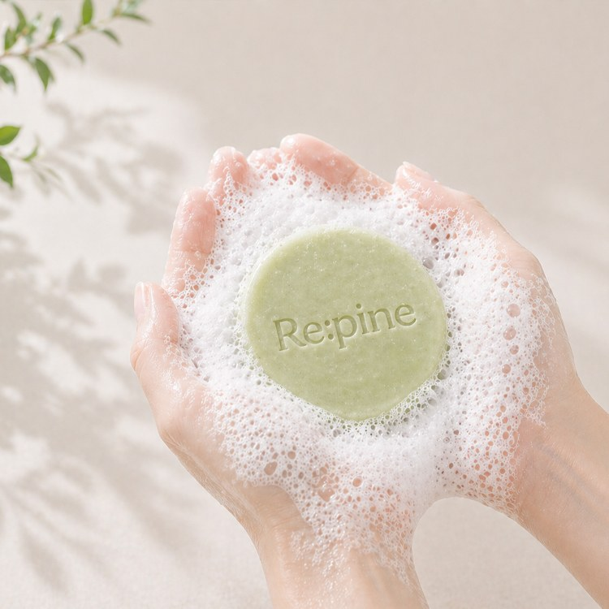
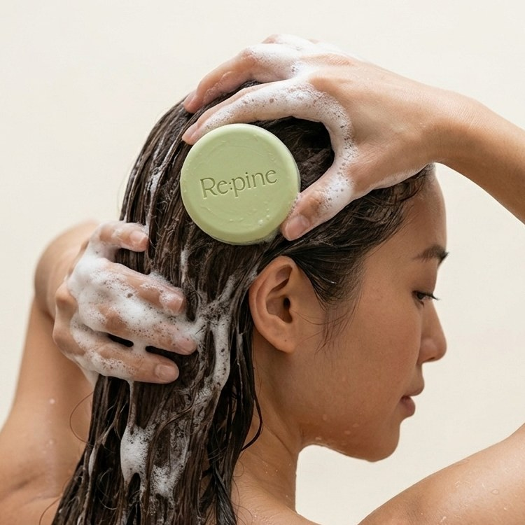
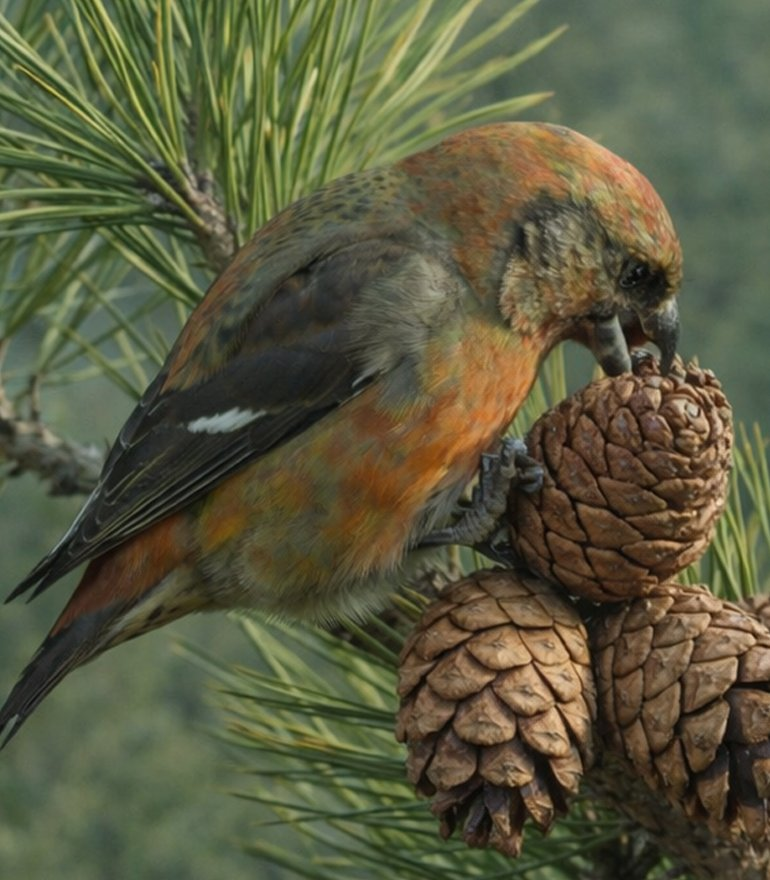
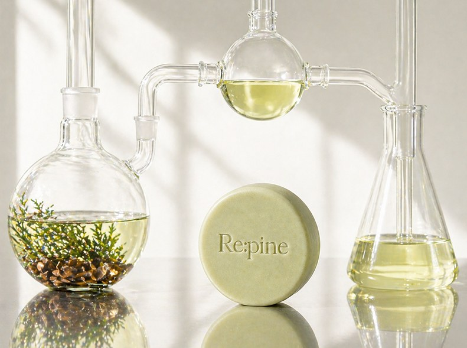

잣 솔방울 추출물과 편백 에센셜오일의
이중 두피·탈모 증상 완화 케어
하나라도 해당된다면,
두피 밸런스가 무너지고 있다는 신호입니다.
민감해지고 지친 두피를 정화·진정시킨 뒤,
힘없이 약해진 모발에 영양과 탄력을 채웁니다.
잣 솔방울 외종피의 폴리페놀이
민감해진 두피의 밸런스를 잡아줍니다.
국내 청정 숲 편백 잎을 수증기 증류해
숲의 청량함을 그대로 담았습니다.
두피와 모공은 깨끗하게, 모발은 부드럽게.
두피 각질 케어 · 모공 노폐물 관리 · 피지 밸런스
두피 보습 · 두피 보호 · 민감 두피 케어
쌀·콩·완두·참깨·보리·헤이즐넛 — 윤기 회복 · 탄력 강화
소량 사용만으로도 쫀쫀하고 조밀한 거품
모발은 뻣뻣함 없이 부드럽게
욕실에서도, 여행갈 때도 가볍게
경기도 산림환경연구소 연구를 통해
염증매개 인자를 억제하는 효과가 확인되었습니다.



“잣 구과 추출물이 피부 진정과 염증 억제에 도움 —
피톤치드를 함유하고 있어 항균 작용과 항부패 작용도 있습니다.
항산화 효과가 상당히 뛰어납니다.”
채정우 박사 · 경기도 산림환경연구소
GTV 기획보도, 2026년 7월 8일
* 특허 연구 데이터 기반 / 원료적 특성에 한함
힘없이 처진 모발은 가볍게 정돈되고,
건강한 윤기와 볼륨감은 살아납니다.


“얇은 모발이 항상 고민인데, 사용할수록 축 쳐지던 모발에 볼륨이 살아나요. 거품 내는 순간 숲 향이 확 퍼지는데, 진짜 산림욕하는 기분!”
“부드럽고 조밀한 거품이 붉고 예민했던 두피를 편안하게 케어해주고, 힘없던 모발도 더 건강해지는 느낌.”
“사용하고 나면 두피가 한결 편안해져요. 편백 피톤치드 향이 상쾌해서 샴푸 시간이 오히려 힐링처럼 느껴졌어요.”
“샴푸바는 처음인데 거품이 풍성하고 사용감이 기대 이상. 신경 쓰이던 정수리도 전보다 건강해 보여요.”
“성분이 정말 좋아서 두피에 자극이 없고 세정력도 뛰어나서 좋습니다. 거품도 너무 잘 나고, 향이 좋아요. 게다가 머리카락에 힘이 생겼어요.”
* 인플루언서 체험 리뷰 및 자사몰 구매고객 리뷰 중 발췌

미온수로 두피와 모발을 충분히 적신 후, 샴푸바를 손으로 문질러 거품을 냅니다. 거품망을 쓰면 더 풍성해집니다.

거품을 두피와 모발에 고르게 펴 발라줍니다. 물에 적신 샴푸바를 직접 부드럽게 문질러도 좋습니다.
3분 정도 그대로 두거나 부드럽게 마사지해 준 후, 미온수로 깨끗이 씻어냅니다. 뻣뻣함 없이 부드럽게 헹궈집니다.

잣나무가 혹독한 계절에서 씨앗을 지키기 위해 외종피에 응축한 폴리페놀 항산화 성분입니다.
경기도 산림환경연구소 연구로 효과가 확인되고, 특허 제10-1443023호로 등록된 기능성 원료입니다.
매년 약 40만 톤 버려지던 국내 최다 식물 부산물이 두피를 위한 원료로 다시 태어났습니다.
“숲은 비워낸 후 다시 채웁니다.
Re:pine은 그 자연의 순환에서 시작했습니다.”
매년 약 40만 톤 버려지던 잣 솔방울을 기능성 원료로 재탄생시켰습니다.

버려지던 잣 솔방울의 재탄생
무표백 재생종이 패키지
액상 용기 없는 고농축 고체 샴푸바
비건소사이어티 인증 헤어케어
| 제품명 | 올고 리:파인 두피 밸런싱 샴푸바 |
|---|---|
| 기능성 | 식약처 보고 탈모 증상 완화 기능성 화장품 |
| 용량 | 120g (NET WT. 4.2 OZ.) · 약 60회 사용 |
| 제형 | 고체 샴푸바 · 약산성 pH |
| 인증 | VEGAN 인증 · ECOCERT 승인 원료 · 피부 저자극 시험 완료 |
전성분 — 소듐코코일이세티오네이트, 옥수수전분, 정제수, 글리세린, 해바라기씨오일, 코코넛애씨드, 소듐이세티오네이트, 데실글루코사이드, 편백오일, 잔탄검, 부틸렌글라이콜, 시트릭애씨드, 살리실릭애씨드, 덱스판테놀, 테트라소듐이디티에이, 잣나무외종피추출물, 아르간커넬오일, 치자추출물, 잇꽃꽃추출물, 덱스트린, 로즈마리추출물, 1,2-헥산다이올, 하이드롤라이즈드쌀단백질, 하이드롤라이즈드참깨단백질, 하이드롤라이즈드보리단백질, 하이드롤라이즈드헤이즐넛단백질, 하이드롤라이즈드콩단백질, 하이드롤라이즈드완두콩단백질, 카프릴릴글라이콜, 리모넨, 알파-터피넨